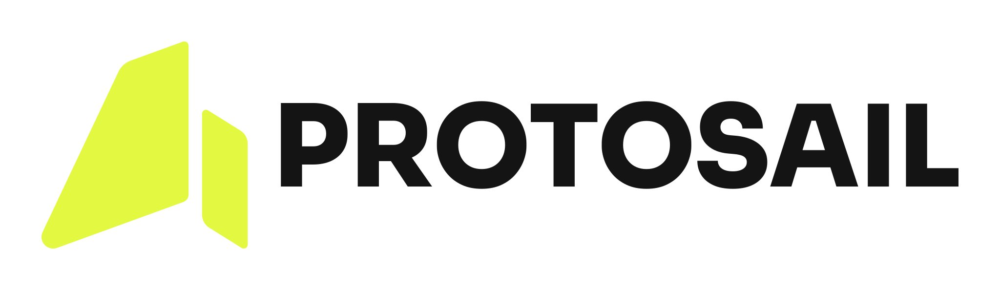
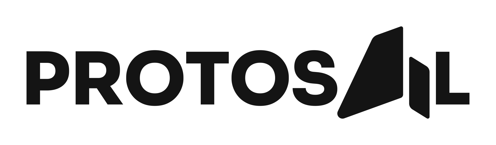
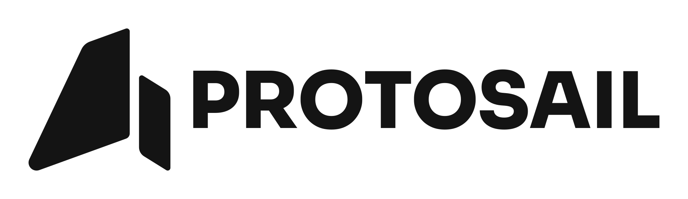
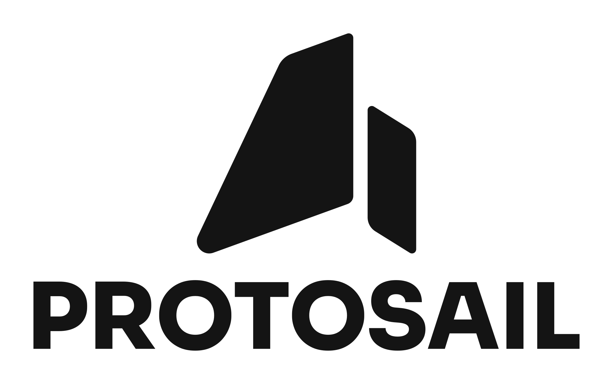

Main logo


lime / black
lime / white
black
white
panel / white
Approved design A. Sora ExtraBold 800, native spacing, all sail corner radii at 79%, and the main panel at 79% height. Every composition uses the same outlined lettering and sail paths.
Download complete kitThe main panel is reduced equally at its top and bottom. The lettering stays vertically centred; the taller icon is excluded from that alignment calculation.





 App icon
App icon| Typeface / weight / added tracking | Sora / 800 / 0 |
| Corner controls / main panel height | 79% / 79% |
| Icon height / width | 1000 / 993.799565 |
| Gap / right sail width | 65 / 220 |
| Wing top / bottom angle | 20° / 20° |
| Both sail bottom extrema | y = 1000 |
| Letter cap / L stem thickness | 1000 / 254.795 |
| Main panel height | 2338.4 (2960 × 79%) |
| Panel / lettering centre | y = 500 / 500 |
Clear space: ¼ icon height for the standalone icon; ½ cap height for transparent compositions. The approved main rectangle has its own fixed padding, with a 180-unit white surround. Stacked panels use 395-unit margins around the complete stacked composition.
The font is converted to paths, preserving native kerning and repeated glyph shapes. Files contain no embedded raster images, font dependencies or external references. The supplied font source and licence are included for future editing.
Recommended widths include the supplied clear space. Use the icon alone below the practical wordmark sizes.



Standalone icon: 32 px wide. Favicon: 16 px square.
{kind=link}
{kind=link}
{kind=link}
{kind=link}
{kind=link}
{kind=link}